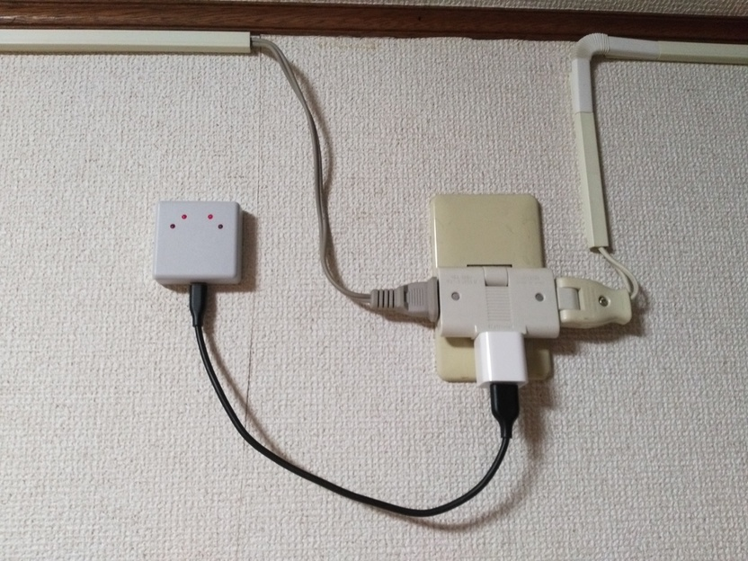
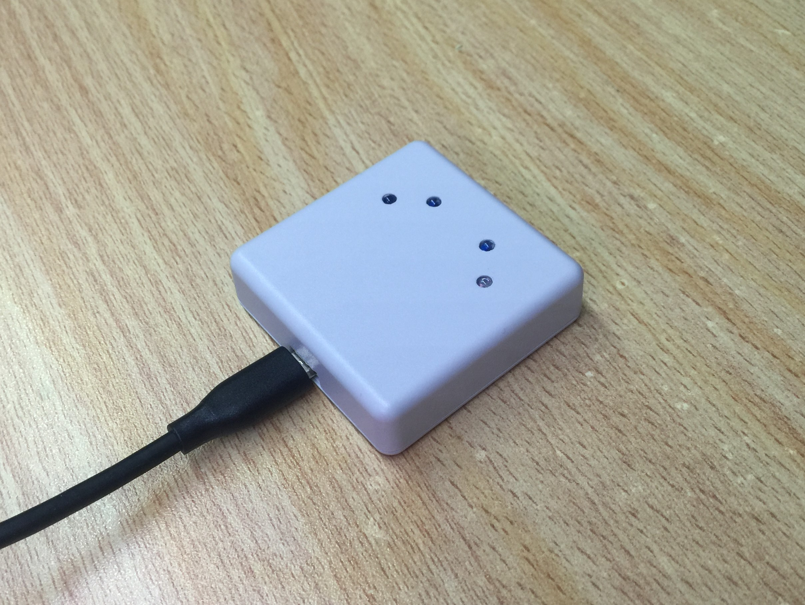
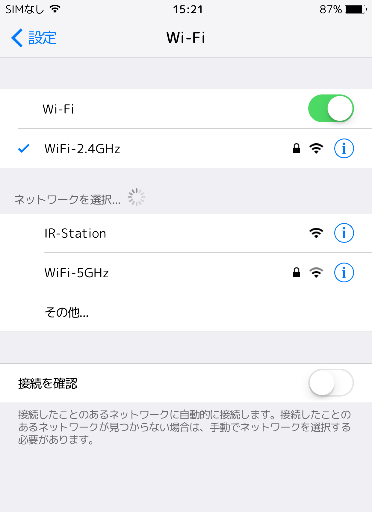
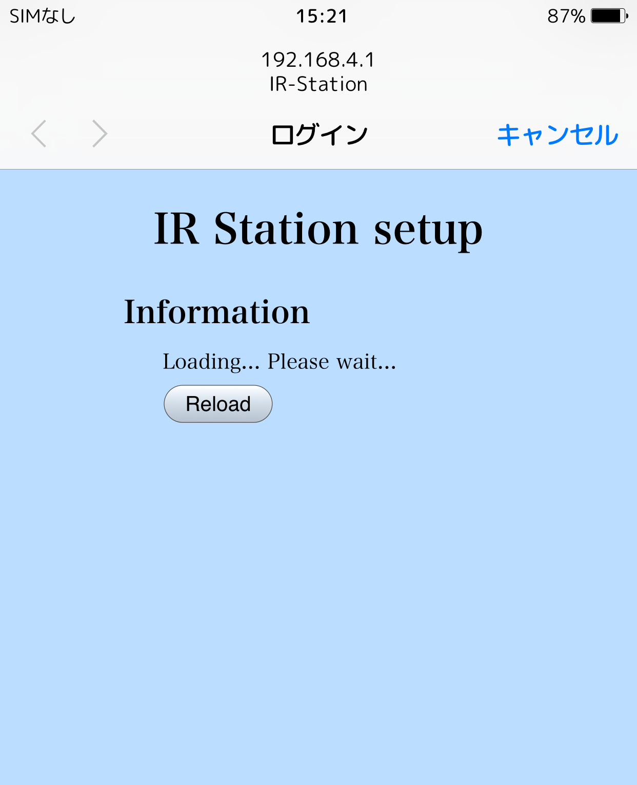
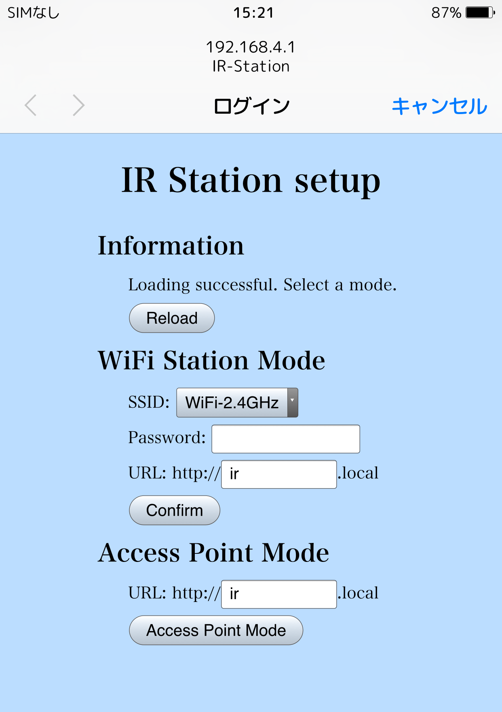
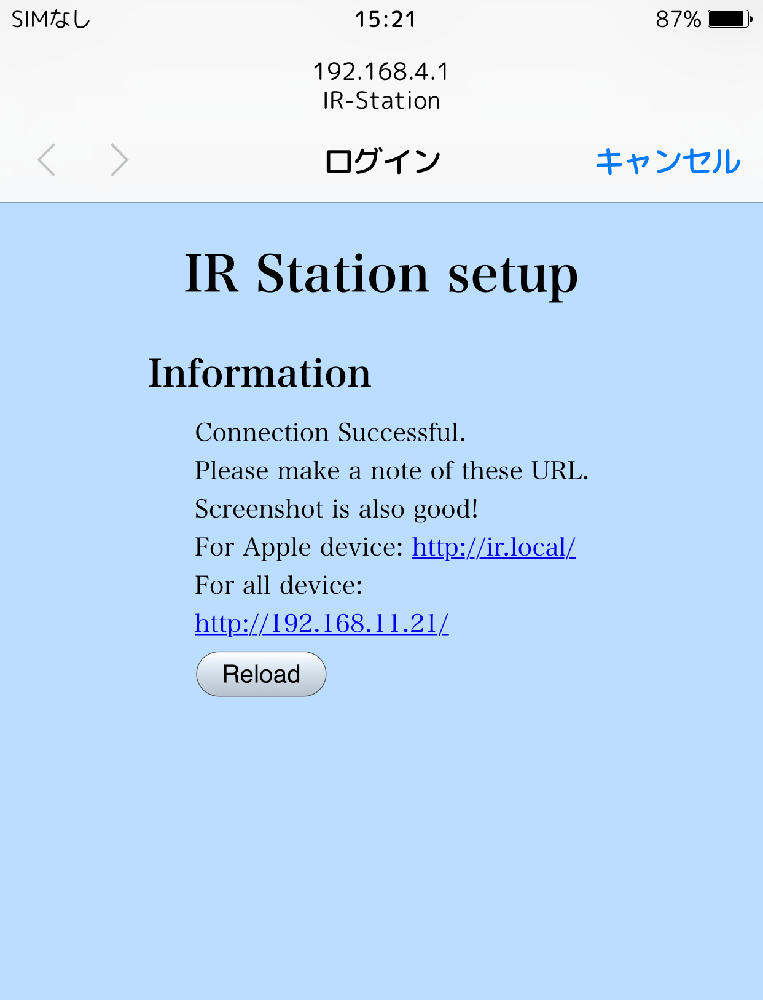
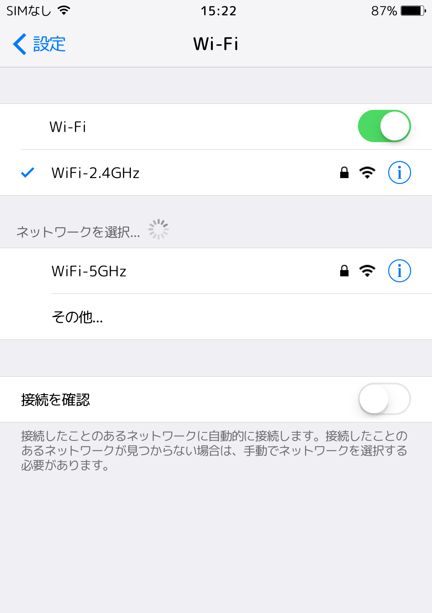
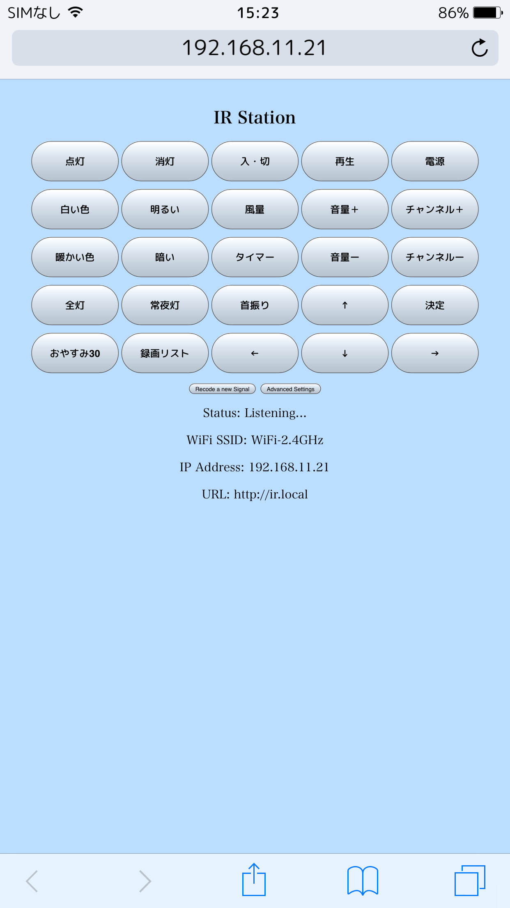
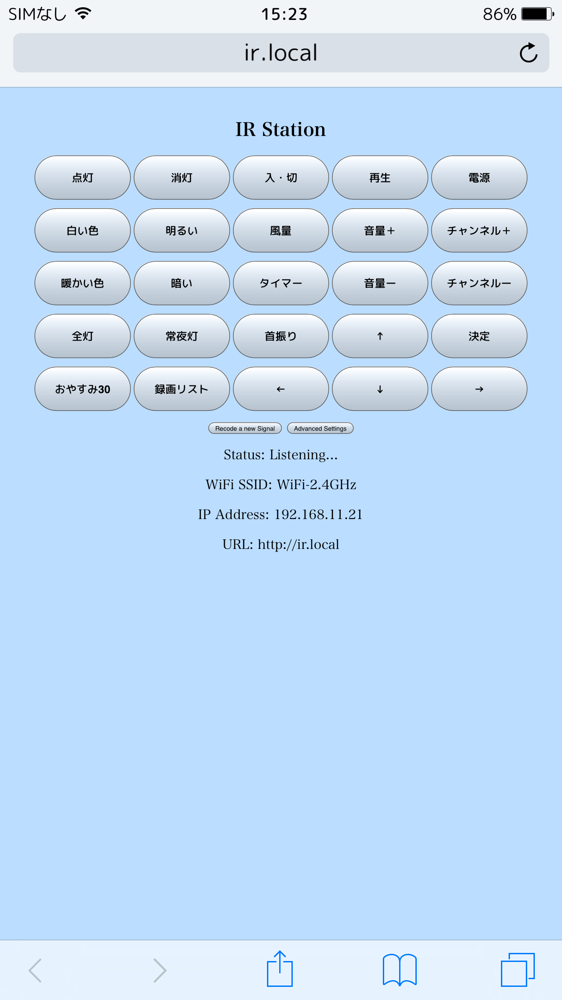

IR-Stationの使い方
IR-Stationとは
自作のWiFi接続の赤外線学習リモコンです．IR-Stationを使えば，スマホやPCから家電製品をコントロールすることができます．
本体の写真
上面の4つの点が赤外線LEDです．

壁に取り付けた時の様子
とてもコンパクトです．

2つの動作モード
WiFiステーションモード
IR-Stationを家のルーターなどに接続して，スマホやPCからはルーター経由でIR-Stationに接続するモードです．
普通はこちらのモードを使います．
WiFiアクセスポイントモード
IR-StationがWiFiのアクセスポイントになり，スマホやPCがIR-StationのWiFiに接続して使用するモードです．
このモードの場合，ルーターが不要なのでお手軽ですが，IR-StationのWiFiはインターネットに接続されていないので，スマホもインターネットにはつなぐことができないので注意が必要です．
IR-Stationのセットアップ
IR-Stationに電源を供給
電源はUSB-Micro-Bケーブルを使って，適当なUSB電源から供給します．

IR-Stationが出現
電源を供給すると，IR-Stationという名前のWiFiが出現します．

自動でウィンドウが現れる
AppleのデバイスやWindowsの場合，自動でログイン画面が現れます．
自動で画面が現れない場合や，その他のデバイスを使っている場合は，適当なブラウザでhttp://192.168.4.1を開いてください．

付近のWiFiを検出
ログイン画面が現れて，しばらくすると，IR-Stationのセットアップ画面が表示されます．
IR-Stationをステーションモードで使う場合
WiFi Setup Mode内に必要事項を記入し，Confirmボタンを押します．
IR-Stationをアクセスポイントモードで使う場合
Access Point Mode内に必要事項を記入し，Access Point Modeボタンを押します．

接続成功画面→スクリーンショット
入力したWiFi情報が正しく，接続に成功した場合，以下のような画面になります．この画面に表示されるURLを控えておかないといけないので，この画面をスクリーンショットすることをお勧めします．
失敗した場合は前の画面に戻るので，もう一度正しく入力してください．(時々，入力したWiFi情報が正しくても接続に失敗することがあるので，その場合はもう一度試してください．)

上手くいくとSSIDが消える
設定が完了するとIR-StationのWiFiが消えてなくなります．

IR-Stationを使う
IPアドレスでアクセス(すべての機器で使えます)

mDNSホスト名でアクセス（対応機器のみ）
mDNS対応機器には，Appleデバイス，iTunesのインストールされたWindows PCなどがあります．これらのデバイスからは，IPアドレスだけでなく，わかりやすい名前のURLでアクセスすることができます．表示される画面は同じです．

赤外線信号を登録する
- 画面の下の方の
Recode a Signalというボタンを押すと，メニューが現れます． - 登録したいチャンネルを選び，ボタンの名前を入力します．
Recodeボタンを押すと，IR-StationのLEDの色が変わります．- その状態でIR-Stationにリモコンを向けて，登録したいリモコンのボタンを押してください．
- 登録に成功すると，IR-Stationの画面上のボタンの名前が更新されます．
赤外線信号を送る（IR-Stationをリモコンとして使う）
画面上のボタンを押すだけです．そのボタンに割り当てられた赤外線信号がIR-Stationから送られます．送信中は画面のボタンがピンクに変わります．ピンク色が元の白色に戻ったら送信完了です．
まとめ
IR-Stationは，僕ひとりでかなりの時間をかけて開発してきたものです．やっと実用できるレベルまで来ました．これからもバージョンアップを重ねて，より便利にしていきたいです．